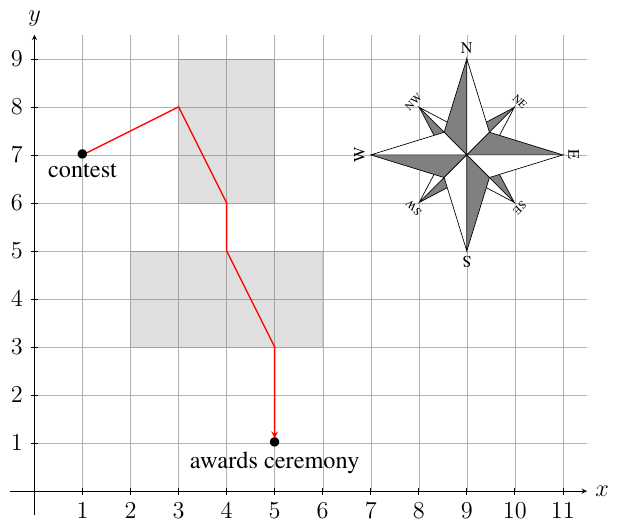

49th ICPC World Championship · Problem L
I’m walking on sunshine, and it don’t feel good – my eyes hurt!
Baku has plenty of sunshine. If you walk away from the sun, or at least perpendicular to its rays, it does not shine in your eyes. For this problem assume that the sun shines from the south. Walking west or east or in any direction between west and east with a northward component avoids looking into the sun. Your eyes will hurt if you walk in any direction with a southward component.
Baku also has many rectangular areas of shade, and staying in these protects your eyes regardless of which direction you walk in. For example, Figure L.1 shows two shaded areas.
Find the minimum distance you need to walk with the sun shining in your eyes to get from the contest location to the awards ceremony location.

The first line of input contains five integers n, xc, yc, xa, and ya, where n (0 ≤ n ≤ 105) is the number of shaded areas, (xc, yc) is the location of the contest, and (xa, ya) is the location of the awards ceremony (−106 ≤ xc, yc, xa, ya ≤ 106). The sun shines in the direction (0, 1) from south towards north. You look into the sun if you walk in direction (x, y) for any y < 0 and any x.
The next n lines describe the shaded areas, which are axis-aligned rectangles. Each of these lines contains four integers x1, y1, x2, and y2 (−106 ≤ x1 < x2 ≤ 106; −106 ≤ y1 < y2 ≤ 106). The southwest corner of the rectangle is (x1, y1) and its northeast corner is (x2, y2). The rectangles describing the shaded areas do not touch or intersect.
Output the minimum distance you have to walk with the sun shining in your eyes. Your answer must have an absolute or relative error of at most 10−7.
2 1 7 5 1 3 6 5 9 2 3 6 5
3.0
Explanation of Sample 1: Figure L.1 shows an optimal path from the contest location to the awards ceremony location with 5 segments. On the first segment you walk away from the sun. On the second and fourth segments you walk towards the sun but in a shaded area. On the third and fifth segments you walk towards the sun outside the shaded areas. The total length of these two segments is 3.
2 0 10 10 0 2 7 3 8 4 3 8 5
7.0
2 11 -1 -1 11 2 7 3 8 4 3 8 5
0.0
3 1 5 9 5 -5 6 2 9 4 7 12 8 1 1 7 3
0.0
3 1 7 9 3 2 6 3 8 4 4 5 6 6 2 7 4
0.0
1 0 0 0 0 -5 -5 5 5
0.0